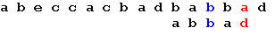
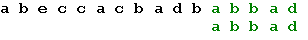
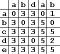
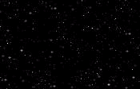

Изучаем DelphiX (Часть 2)
Изучаем DelphiX. Часть 2: Усложняем нашу игру.
Автор: Влад Энгельгардт Хех! загружу:"Прежде чем начать, объясню решение Д/З:
1. Сделайте так, чтобы при уходе патрона из зоны видимости он уничтожался:
Это очень легко сделать достаточно в процедуру DoMove патрона вставить:
if y<= 0 then Dead; if y>= 600 then Dead;
Нужно это для того, чтобы повысилось качество игры.
2. Сделайте, чтобы патроны стреляли очередями, а не кучами как у меня:
Вот эта задача была посложнее первой. Во-первых, как я сделал в первой части этого туториала, делать нельзя из-за причины небольшой "кривости" DelphiX, он может держать только определённое количество спрайтов, а если их больше он или выходит или подвисает. Так что, делаем вот так:
В класс с плеером добавляем две переменные, он теперь выглядит так (я добавил комментарии к тем строчкам которые изменились):
TPlayerSprite = class(TImageSprite)
Private
lngpolet:integer; //расстояние которое пролетела пуля
oldlngpolet:integer; //расстояние которое пролетела предыдущая пуля
protected
procedure DoMove(MoveCount: Integer); override;
end;
Процедура DoMove класса PlayerSprite изменяется следующим образом:
Procedure TPlayerSprite.DoMove(MoveCount: Integer);
Begin
inherited DoMove(MoveCount);
if isLeft in Form1.DXInput1.States then x:=x-5;
if isRight in Form1.DXInput1.States then X:=x+5;
if isup in Form1.DXInput1.States then
begin
if lngpolet-oldlngpolet>=250 then // Если расстояние между пулями меньше 250,
// то пуля не создаётся
begin
Inc(lngpolet);
with TPlayerFa.Create(Engine) do
begin
PixelCheck := True;
Image := form1.dxImageList1.Items.Find('Pula');
X := Self.X+Self.Width -40;
Y := Self.Y+Self.Height -80;
Width := Image.Width;
Height := Image.Height;
end;
oldlngpolet := lngpolet; //после создания пули - последняя становится первой
end;
end;
if y >= form1.DXDraw1.SurfaceHeight-image.Height then
y := form1.DXDraw1.SurfaceHeight-image.Height;
if x >= form1.DXDraw1.SurfaceWidth -image.Width then
x := form1.DXDraw1.SurfaceWidth -image.Width;
if y <= 0 then
y := 1;
if x <= 0 then
x:=1;
lngpolet := lngpolet + MoveCount; // расстояние увеличиваем, когда пуля движется
end;
Вот и всё, что требовалось сделать.
В этой части вы узнаете:
1. Создание анимации.
2. Создание примитивного AI.
3. Создадим простенькие взрывы.
Создание анимации.
Анимация в DelphiX строится следующим образом:
Это пример покадровой анимации. У каждого кадра должен быть одинаковый размер.
В данной ситуации:
Ширина: 40
Высота: 38
Давайте теперь, применим ее к нашей игре.
Идём в DXImageList, находим наш спрайт Pula и загружаем картинку с анимацией. Далее устанавливаем свойства спрайта следующим образом:
и в процедуре DoMove класса PlayerSprite изменяем код следующим образом:
Procedure TPlayerSprite.DoMove(MoveCount: Integer);
begin
inherited DoMove(MoveCount);
if isLeft in Form1.DXInput1.States then x:=x-5;
if isRight in Form1.DXInput1.States then X:=x+5;
if isup in Form1.DXInput1.States then
begin
if lngpolet-oldlngpolet>=250 then
begin
Inc(lngpolet);
with TPlayerFa.Create(Engine) do
begin
PixelCheck := True;
Image := form1.dxImageList1.Items.Find('Pula');
X := Self.X+Self.Width -40;
Y := Self.Y+Self.Height -80;
Width := Image.Width;
Height := Image.Height;
AnimCount := Image.PatternCount; //число кадров
AnimLooped := True; //повторять ли анимацию
AnimSpeed := 10 / 1000; //скорость анимации
end;
oldlngpolet := lngpolet;
end;
end;
if y >= form1.DXDraw1.SurfaceHeight-image.Height then
y := form1.DXDraw1.SurfaceHeight-image.Height;
if x >= form1.DXDraw1.SurfaceWidth -image.Width then
x := form1.DXDraw1.SurfaceWidth -image.Width;
if y <= 0 then
y := 1;
if x <= 0 then
x:=1;
lngpolet := lngpolet + MoveCount;
end;
Можно проделать тоже самое с другими классами для придания реалистичности игры.
Cоздание примитивного AI.
Для начала маленько улучшим наш класс плеера, добавим в него столкновение, и он теперь выглядит следующим образом:
TPlayerSprite = class(TImageSprite)
private
lngpolet:integer;
oldlngpolet:integer;
protected
procedure DoMove(MoveCount: Integer); override;
//добавляем
procedure DoCollision(Sprite: TSprite; var Done: Boolean); override;
end;
Далее создаём процедуру DoCollision и вставляем в неё следующее:
procedure TPlayerSprite.DoCollision(Sprite: TSprite; var Done: Boolean); begin if Sprite is TPlayerFa then Dead; Collision; end;
Дальше пред implementation добавляем 1 переменную:
plx:double; //X плеера
Далее обновим класс TPlayerFa и он станет таким:
TPlayerFa = class(TImageSprite)
private
stril:Integer; // Как вы заметили, добавилась переменная
protected
procedure DoCollision(Sprite: TSprite; var Done: Boolean); override;
procedure DoMove(MoveCount: Integer); override;
public
constructor Create(AParent: TSprite); override;
destructor Destroy; override;
end;
А в TPlayerFa добавляем строчку:
Procedure TPlayerFa.DoMove(MoveCount: Integer); begin y:=y-stril; // когда стреляет игрок, с этой скоростью будет двигаться пуля y:=y+stri; // когда стреляет AI, с этой скоростью будет двигаться пуля if y<= 0 then Dead; if y>= 600 then Dead; end;
А процедура TBoSS.DoMove становиться такой:
Procedure TBoSS.DoMove(MoveCount: Integer);
begin
inherited DoMove(MoveCount);
if x>= 600 then I:= false;
if x<= 0 then I:= true;
if i= true then X := X+5;
if i= false then X := X-5;
if plx=x then //если равна х плеера стреляем
begin
with TPlayerFa.Create(Engine) do
begin
PixelCheck := True;
Image := form1.dxImageList1.Items.Find('Pula');
X := Self.X+Self.Width-70;
Y := Self.Y+Self.Height+10;
Width := Image.Width;
Height := Image.Height;
stril:=5; //скорость патрона
end;
end;
Collision;
end;
И естественно полнеет и TPlayerSprite:
Procedure TPlayerSprite.DoMove(MoveCount: Integer);
begin
inherited DoMove(MoveCount);
plx:=x; //чтобы наш комп видел нашего плеера
if isLeft in Form1.DXInput1.States then
begin
x:=x-5;
plx:=x;
end;
if isRight in Form1.DXInput1.States then
begin
X:=x+5;
plx:=x;
end;
if isup in Form1.DXInput1.States then
begin
if lngpolet-oldlngpolet>=250 then
begin
Inc(lngpolet);
with TPlayerFa.Create(Engine) do
begin
PixelCheck := True;
Image := form1.dxImageList1.Items.Find('Pula');
X := Self.X+Self.Width -40;
Y := Self.Y+Self.Height -80 ;
Width := Image.Width;
Height := Image.Height;
stril:=-4;
end;
oldlngpolet := lngpolet;
end;
end;
if y >= form1.DXDraw1.SurfaceHeight-image.Height then
y := form1.DXDraw1.SurfaceHeight-image.Height;
if x >= form1.DXDraw1.SurfaceWidth -image.Width then
x := form1.DXDraw1.SurfaceWidth -image.Width;
if y <= 0 then
y := 1;
if x <= 0 then
x:=1;
lngpolet := lngpolet + MoveCount;
Collision;
end;
И поменялся конструктор PlayerFa:
constructor TPlayerFa.Create(AParent: TSprite);
begin
inherited Create(AParent);
Image := form1.DXImageList1.Items.Find('Pula');
Width := Image.Width;
Height := Image.Height;
AnimCount := Image.PatternCount; //число кадров
AnimLooped := True; //повторять ли анимацию
AnimSpeed:= 10 / 1000;
Collision;
end;
Создадим простенькие взрывы.
Для начала загрузим спрайт взрыва в DXImageList вот он: 
Назовём его "ex" и установим размер кадра на 32Х48 (PatternHeight - PatternWidth)
Дальше, в класс TPlayerSprite в private добавляем procedure Hit; и создаём обработчик:
procedure TplayerSprite.Hit;
begin
Collisioned := False;
Image := Form1.dxImageList1.Items.Find('Ex');
Width := Image.Width;
Height := Image.Height;
AnimCount := Image.PatternCount;
AnimLooped := False;
AnimSpeed := 15/1000;
AnimPos := 0;
end;
и в процедуре TPlayerSprite.DoCollision вставляем следущий код:
procedure TPlayerSprite.DoCollision(Sprite: TSprite; var Done: Boolean);
begin
if sprite is Tplayerfa then
begin
TPlayerSprite(Sprite).Hit;
dead;
end;
Done := False;
end;
Этот код надо разместить и в Tboss. DoCollision.
И под конец маленький бонус:
Можно создать бэкграунд, без создания нового класса достаточно в FormCreate написать:
with TBackgroundSprite.Create(DXSpriteEngine1.Engine) do
begin
SetMapSize(1,1);
Image := dxImageList1.Items.Find('bgr');
Z:= -2;
Tile := True;
end;
Где bgr спрайт-бэкграунд.
Вот мой БГ:
Нравиться? Здесь можно скачать исподники всей этой части.
part2.rar(77,5 kB)